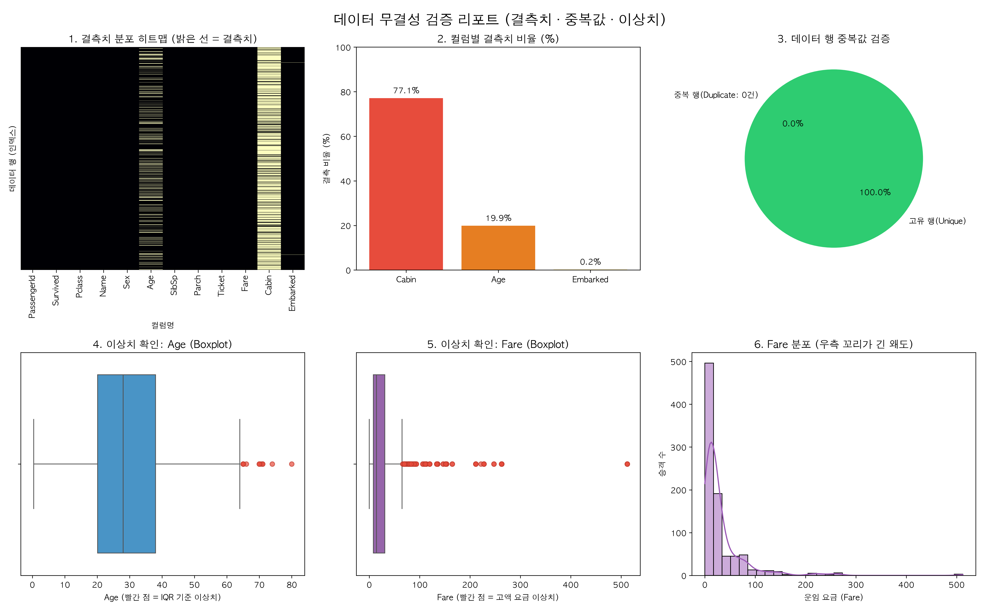
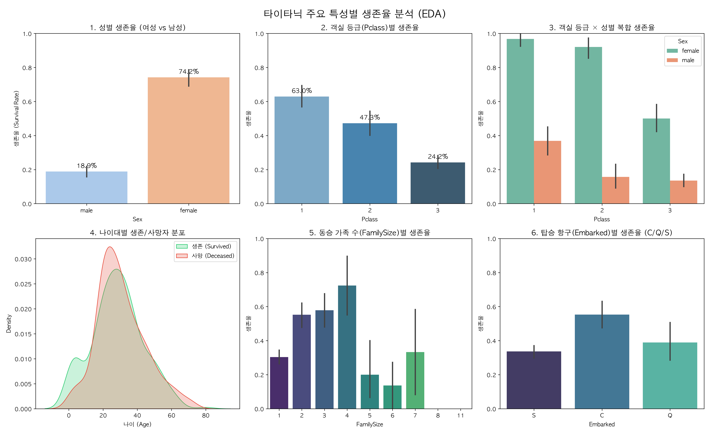
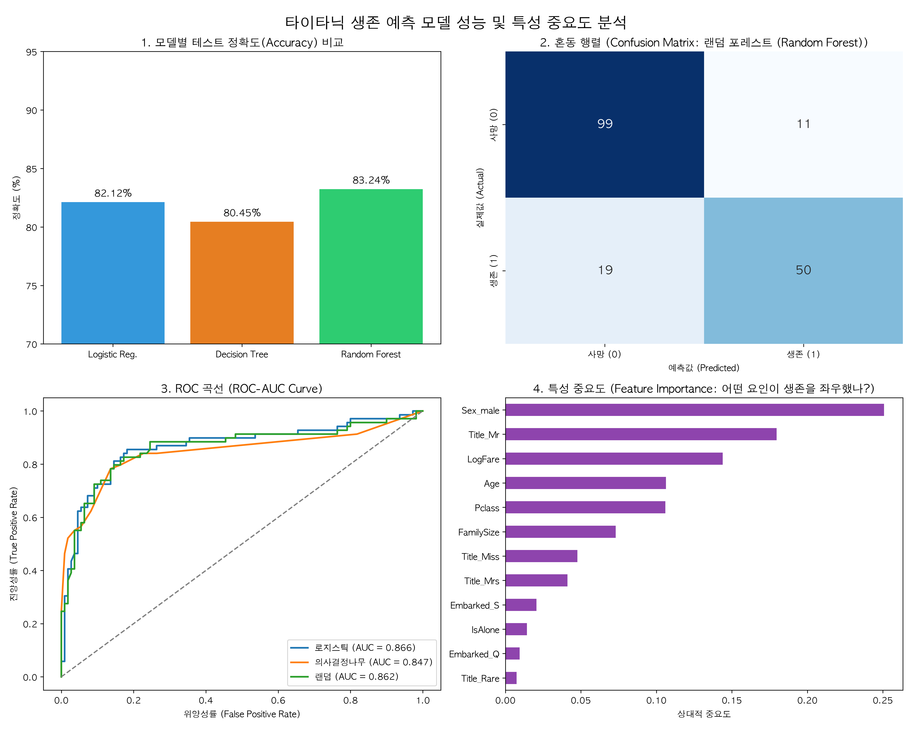

1912년 4월 타이타닉 재난의 통계적 해체.
단순한 운이 아닌 성별, 계층, 그리고 사회적 구조가 가른 삶과 죽음의 경계.
데이터가 증명한 세 가지 결정적 생존 메커니즘 요약.
"여성과 아이 먼저"라는 에드워디언 규범의 강력한 발현.
남성 대비 여성 승객의 생존율이 약 4배 높은 압도적 통계치 확인.
티켓 가격과 상부 갑판 접근성의 상관성.
1등석 63.0% 대비 3등석 24.2%로, 지위와 공간 배치가 가른 탈출 기회의 불균형.
단독 탑승자(30.4%)보다 2~4인 소가족(55~70%)의 생존율 극대화.
5인 이상 대가족의 대피 통제 한계 및 급격한 생존율 하락.
모델 신뢰성 확보를 위한 3단계 정제 철학.
완전 무결한 중복값 0건 및 결측치 패턴의 체계적 보정 완료.
DATA INTEGRITY VERIFIED (100% UNIQUE ROWS)해상 재난 행동 강령이 빚어낸 극명한 통계적 결과.
여성 생존율 74.2% vs 남성 생존율 18.9%
STATISTICAL GAP: 55.3%P
구명정 탑승 우선순위에서 남성은 철저히 배제됨.
전체 남성 577명 중 468명 사망으로 인한 강력한 변수 영향력 확인.
객실 등급과 성별이 교차할 때 드러나는 극한의 불평등.
1등석 여성 96.8% vs 3등석 남성 13.5%
SURVIVAL RATIO SPREAD: 7.17x동승 인원수와 생존 가능성의 역 U자형 관계 곡선.
단독 탑승자(30.4%) < 대가족(15~33%) < 소가족(55~72%)
OPTIMAL SURVIVAL UNIT: 3~4 MEMBERS3개 분류 알고리즘 비교를 통한 최적 추론 모델 도출.
100개 결정 트리 앙상블을 통한 비선형 관계 학습 및 과적합 억제.
머신러닝 알고리즘이 판단한 핵심 생존 결정 인자 순위.
상위 3개 특성이 전체 생존 예측력의 57.6% 장악
DOMINANT FACTORS: SEX • TITLE • FARE알고리즘이 시뮬레이션한 가상 인물의 운명과 데이터가 남긴 사회적 함의.
최상위 구명보트 접근권과 도덕적 우선 배려가 결합된 압도적 생존 확정군.
가장 낮은 대피 우선순위와 구조적 소외가 중첩된 고위험 사망 취약군.
HIGH-RESOLUTION ARTIFACTS GENERATED VIA MATPLOTLIB & SEABORN

FIGURE 1. 데이터 무결성 검증 리포트 (결측치 히트맵, 비율, 중복값, IQR 이상치 박스플롯)

FIGURE 2. 탐색적 데이터 분석 (성별, 객실등급, 나이대, 동승가족수, 탑승항구별 생존율)

FIGURE 3. 머신러닝 모델 성능 비교 (정확도, 혼동행렬, ROC 곡선, 랜덤포레스트 피처 중요도)